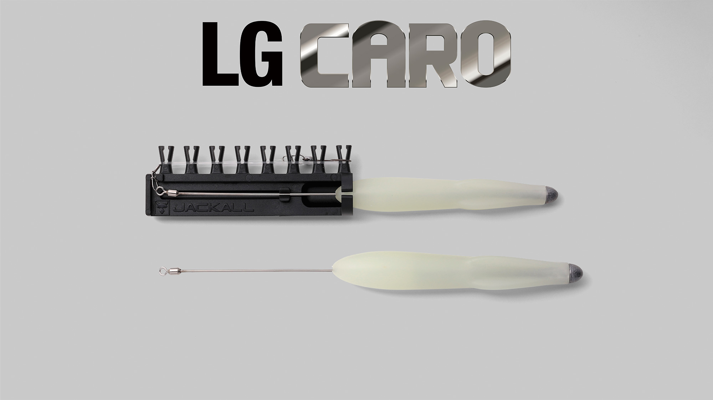
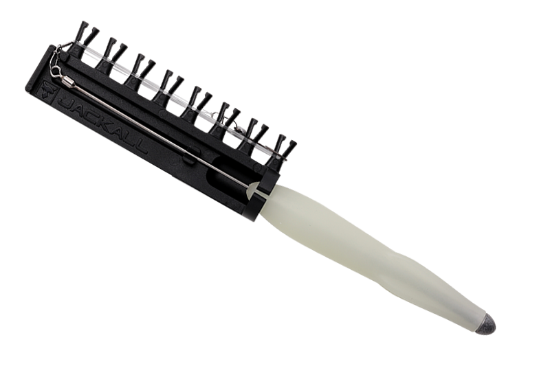
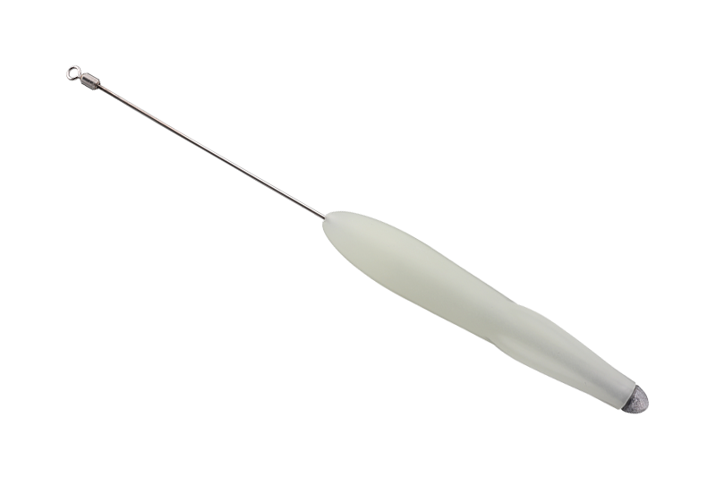
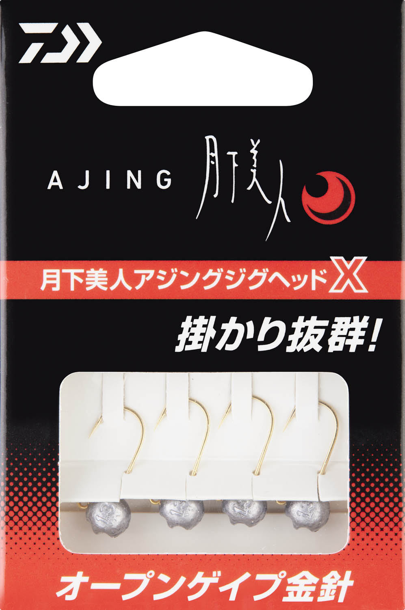
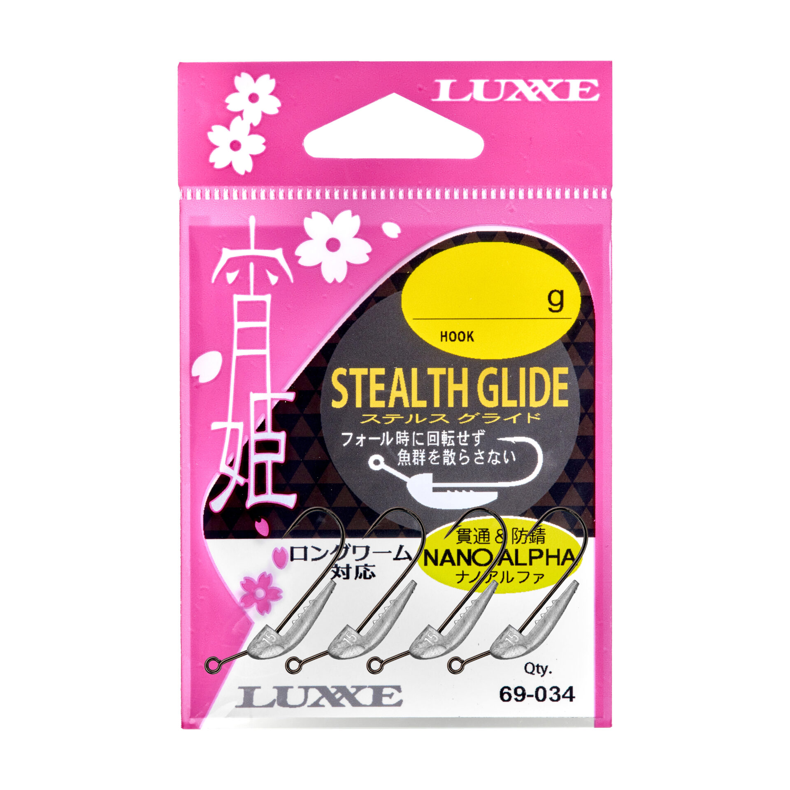
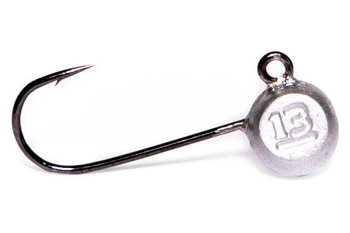

LGキャロ
（LG CARO）
LGキャロ（LG CARO）はJACKALL（ジャッカル）のライトゲーム用キャロです。
現場で結び直す手間がいらないワンタッチのキャロ仕掛けで、ジグ単やフロートでは届かない沖のレンジまで、すぐに投げて狙えるのが最大の魅力です。

画像出典:JACKALL公式HP
スペック
- メーカー
- JACKALL（ジャッカル）
- タイプ
- ライトゲーム用キャロ（シンキング・夜光）
- ラインナップ
- 仕掛けセット／本体（FS・S の2タイプ）
- 重さ
- FS：M 14g・L 20g／S：M 10g・L 16g
- ターゲット
- アジ
- 価格
- 仕掛けセット 1,650円／本体 880円（税込）
- 発売
- 2026年12月
▼今すぐチェック
LGキャロの特徴
飛距離と素早い底取りで、手軽に沖を狙えるライトゲーム用キャロ
-
結び直し不要のワンタッチ仕掛け
専用の仕掛け巻きにセットされた仕掛けセットなら、スナップでつなぐだけですぐに釣りを始められる。エギングタックルで扱いやすい重さもあるので、ライトゲームを手軽に始めたい人にも向いている。
-
泳ぎを安定させるバックフィン
バックフィンが、巻いている時やアクションを入れた時の本体のブレを抑える。潮の変化やアタリが手元に伝わりやすく、魚によけいな違和感を与えにくい。
-
糸絡みを減らすスイベルワイヤーと夜光仕様
スイベルワイヤーで糸絡みを減らし、本体は光量の強い夜光仕様。夜釣りでも投げた先が見やすい。本体はスナップでつながるので、別売りの本体やLGフロートにすぐ付け替えられる。
LGキャロの使い方
キャストしたら底まで沈めて、速めのただ巻きやリフト＆フォールで、広い範囲をテンポよく探るのが基本です。
飛距離と沈む速さを生かして、短い時間で沖の中層からボトムまで探れます。アタリが出たレンジが分かったら、同じカウントで沈めて同じ層を通しましょう。
LGキャロの得意な状況
常夜灯から離れた沖のブレイクや、足元から水深がある堤防で、ジグ単やフロートでは届かない沖のアジを狙う場面が出番です。
飛距離と素早い底取りで、群れが沖にいる日でも、アジのいるレンジまで届けて釣れるのが強みです。
夜光仕様なので、夜のアジングで投げた先を見失いにくいのもうれしいポイントです。
ワンポイント
まずは仕掛けセットで始めて、慣れてきたら本体だけ買い足すのがおすすめです。本体はスナップで付け替えられるので、状況に合わせて重さやLGフロートに替えて、同じ仕掛けのまま攻め方を変えられます。
LGキャロのタイプと重さの使い分け
| アイテム | 重さ／価格（税込） | 内容 |
|---|---|---|
| 仕掛けセット FS | M 14g・L 20g／1,650円 | 専用の仕掛け巻きにセットされた、すぐに使えるキャロ仕掛け |
| 仕掛けセット S | M 10g・L 16g／1,650円 | 専用の仕掛け巻きにセットされた、すぐに使えるキャロ仕掛け |
| LGキャロ FS（本体） | M 14g・L 20g／880円 | 付け替え用の本体 |
| LGキャロ S（本体） | M 10g・L 16g／880円 | 付け替え用の本体 |
どれもシンキングです。公式ページにFSとSの違いの説明は無いため、重さで選びましょう。遠投したい時や深い場所ではFS（14g・20g）、軽めのタックルや浅い場所ではS（10g・16g）が目安です。
ラインナップ
LGキャロは、すぐに使える仕掛けセットと、付け替え用の本体の2種類があります。

仕掛けセット専用の仕掛け巻きにセットされた状態。現場でスナップにつなぐだけで使える。

LGキャロ（本体）付け替え用の本体。重さを変えたい時や予備に。
画像出典:JACKALL公式HP
▼今すぐチェック
LGキャロに似ているルアー
-

月下美人 アジングジグヘッドX ダイワ 詳細はこちら＞掛けやすいフックのアジング専用ジグヘッド。足元から近くを探るジグ単の釣りに。
-

宵姫ステルスグライド がまかつ 詳細はこちら＞回転せず静かに沈むジグヘッド。近くの群れを散らさずに誘いたい時に。
-

スモウヘッド BREADEN 詳細はこちら＞低重心で姿勢が安定する亜鉛製のジグヘッド。ボトムを探りたい時に。